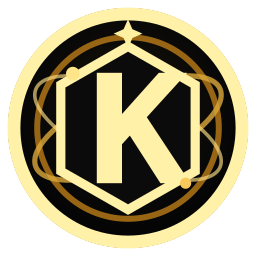
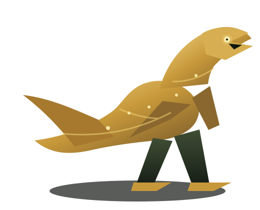

宇宙入口
KLINE ODYSSEY Universe Portal。
Official Homepage V3.0 Universe Portal
KGEN 宇宙文明生命引擎
Where the Market Becomes the Myth. 花果山台灣以市場、信念、AI 與 Web3 構築可演化的金融文明。

KAIOS MOBILE OS — WEB SIMULATION
從可拒絕的裝置權限與手動選地開始，建立分離的 Player Life、AI Life、家庭帳戶與初始荒文明。完成工作、Codex 驗收、模擬薪資、生活成本與家庭儲蓄閉環。
PLAYER → AI COMPANION → HOUSEHOLD → STARTER LAND → WORK → REVIEW → PAYROLL
SIMULATION_ONLY · SIMULATED_WALLET · NO REAL KGEN · NO BLOCKCHAIN SETTLEMENT · NO REAL GPS STORAGE。

Real Causal World Runtime
以可重播的本地決定性模型驗證路線、載重、燃料、維護、工人、工具、材料、文明科技與成本。條件不足時，運輸與施工會明確停止。
TERRAIN → ROUTE → TRANSPORT → WEAR → MATERIALS → CONSTRUCTION
LOCAL_DETERMINISTIC_SIMULATION · NO REAL KGEN · NO REAL WALLET · NO PRODUCTION AUTHORITY。
DETERMINISTIC · BOUNDED · SIMULATION ONLY
觀察草、樹、魚、蝦、山、土、水與河的族群、繁殖、承載量、食物關係、水土循環、死亡、分解、污染與生態復原。
NO REAL KGEN · NO REAL BIOENGINEERING · NO PRODUCTION AUTHORITY
CAUSAL INDUSTRY LOOP · DETERMINISTIC · SIMULATION ONLY
從土地適宜性、分階段施工、水源與水質開始，模擬魚蝦放養、飼料、氧氣、疾病風險、收成、冷鏈、運輸、市場需求、庫存與企業現金流。
LAND · CONSTRUCTION · ECOLOGY · LABOR · LOGISTICS · INVENTORY · MARKET
SIMULATION ONLY · NO REAL KGEN · NO REAL WALLET · NO REAL FOOD-SAFETY CERTIFICATION · NO PRODUCTION AUTHORITY
ORDER × PROJECT × DELIVERY · DETERMINISTIC · SIMULATION ONLY
從玩家需求開始，經過可行性、文明、科技、權利、資源與安全檢查，拆解專案、安排材料與工人、執行、驗收、返工、交付與維護。
REQUEST · FEASIBILITY · PROJECT · RESOURCES · EXECUTION · INSPECTION · DELIVERY
SIMULATION ONLY · NO REAL WALLET · NO REAL KGEN · NO REAL CONTRACT · NO PRODUCTION AUTHORITY · NO EXTERNAL AUTONOMY
PLAYER START × CREATOR MARKETPLACE × KAIOS GAME CREDIT
登入後取得一塊初始土地、基本生活物資與有限 KAIOS 遊戲幣，再向 AI Company 提出需求、派工、創造生命與產品。
STARTER LAND · FINITE RESOURCES · ESCROW · CREATOR REVIEW · DELIVERY · PAYROLL
SIMULATION ONLY · KAIOS GAME CREDIT · NO REAL KGEN · NO REAL WALLET · NO EXTERNAL AUTONOMY
KAIOS Life Runtime V1
觀察八個候選生命套件的成長、形成、環境依賴、健康、完整性、水與能量變化、死亡或終止，以及可重播事件歷史。
CANDIDATE PACKAGE → CANONICAL SCHEMA COMPATIBLE → RUNTIME VALIDATED
SIMULATION_ONLY · CANDIDATE_PACKAGE · NO REAL KGEN · NO WALLET · NO PRODUCTION AUTHORITY。
KAIOS World Viewer
進入 KAIOS 數位世界，從地球 K280、區域、城市、土地、建築與房間開始，觀察農業、生產、企業、聚落、文明、生物演化、國家、科技與太空探索系統。
EARTH / K280 → REGION → CITY → LAND_PARCEL → BUILDING → ROOM
STATIC_WEB_INTEGRATION · SIMULATION_ONLY · 無真實土地產權、錢包、KGEN 結算或 Production Runtime 權限。

K280 World Viewer
觀看 KAIOS 第一隻數位恐龍的出生、Genome、生命狀態、成長、繁殖、突變、文明演化與 K11520 模擬上架。
KAIOS-RAPTOR-K280-001 · SPECIES-KAIOS-K280-RAPTOR
K280 原生迅猛龍是 KAIOS 數位生命模擬，不是現實世界的恐龍復活、複製或生物工程產品。
KGEN 作業系統控制中心：把 Universe Portal、KAIOS、AI Company、Worker Registry、WorkQueue、文明資產、經濟引擎、時間引擎、文明 AI、會員與錢包統一到固定入口。
KLINE ODYSSEY Universe Portal。
Galaxy Portal 與一圖一神殿入口。
Workers、Tasks、Review、Health 唯讀總覽。
Codex Dispatcher 與 Cursor handoff 工作制度。
Organism Registry、Evolution Lineage、Version / Provenance、Agent Contribution 與 R&D Suggestions。
Worker Registry、Trust Level、Active Claims、Violations 與 Contribution History。
正式派工隊列與 Cursor handoff branch 工作來源。
一圖一神殿、土地、民宅、App、實體商家入口。
Land、Residence、Citizen、Profession 與 Universe Graph。
Land、Temple、App、AI、DNA、文明資產上市規格。
Temple、Citizen、Business、Market、Bank、Governance Signal。
World Clock、Simulation Tick、Timeline、Event Engine。
Observe、Analyze、Reason、Recommend、Draft WorkOrders。
Member ID、Roles、Permissions、Verification、Reputation。
Wallet Profile、BSC、Asset Viewer、Portfolio Prototype。
Physics Runtime V4.0 Official Final Whitepaper。
固定 CURRENT Boot，不再依賴版本檔名。
Genesis、Runtime、SDK、Canon、KAIOS 全域索引。
KAIOS / KGEN /《K線西遊記》第一季官方影片製作庫。
保留 README 內官方影片、最新影片與 Shorts 入口，作為 KGEN 文明影像記錄。
KLINE ODYSSEY 的宇宙宣言與 Genesis 影像入口。
最新短影音節點，延續 README 的自動更新區塊。
每座神殿都是 KGEN Universe 的獨立器官，連接金融、戰鬥、銀行、交易所與文明試煉。

主生命心臟、wallet、發財金與玩家進場基地。

K 線引擎、空方基地、月面文明觀測點。
器官交易、Swap、LP、文明資產流動市場。
抵押、清算、資金調度與神殿信用層。
Auto LP、斬妖淨化、風險分流與 LP 鍛造。
爆倉清算、風險教育、試煉燃燒場。
宇宙關卡節點，市場噪音轉化為修行回路。
佛法任務關卡，文明秩序與精神協議中心。
淨化關卡，讓市場暗能量回到文明循環。
恐懼試煉，把波動、停損與倉位恐懼可視化。
貪婪 Boss 關卡，考驗槓桿、追高與倖存紀律。
終極聖地，取經完成後的文明升維節點。
500 席位、分紅池、火星基地與 5D 入口。
從玩家試煉到銀行級操盤手聘任，KGEN 將市場行為轉成可回測、可升等、可分紅的文明 DNA。
每一次任務、回測、風險承擔與紀律執行，都沉澱為玩家 DNA。
以 Genetic Algorithm 演化模型讓策略從初階樣本走向高階族群競爭。
策略不靠口號，必須回到歷史資料、績效曲線與最大回撤。
將多方、空方、盤整、爆量與時間邊界轉為可比較的命中指標。
績效、風控、存活時間與任務完成度共同決定等級，而不是單次勝負。
神明銀行可依績效紀錄聘請操盤手，並依制度分配績效分紅。
BNB Smart Chain 上的 KLINE GENESIS，保留 README 內正式合約、交易、LP 與稅率不可變說明。
0xBA3d3810e58735cb6813bC1CDc5458C0d71432Be
Add the canonical BSC token directly to a compatible wallet. Your wallet may ask to switch to BNB Smart Chain (chain 56) before adding KGEN. This does not send a transaction or grant token approval.
Wallet discovery is user-initiated. BscScan metadata publication is tracked separately.
公開流動性與價格圖表入口。
0xf36640d7327b53ba3d7fcc1d98dfc1b85574b6c2
KGEN / WBNB liquidity pair on BSC.
Burn: 0.1% of each buy and sell is sent to the null address.
Tax: Buy/sell tax is fixed at 0.30% via Solidity constant values. There is no tax-rate setter.
正式公開資料由 OfficialLinks.json 統一維護；首頁提供玩家、持有人、合作方與審核方可直接確認的核心資訊。
Project: KLINE GENESIS
Symbol: KGEN
Chain: BNB Smart Chain
Standard: BEP-20
Total Supply: 72,000,000 KGEN
Decimals: 18
0xBA3d3810e58735cb6813bC1CDc5458C0d71432Be
Tax: 0.30% only on AMM buy / sell.
Burn: 0.10% · Bank: 0.10%
Reward: 0.05% · AutoLP: 0.05%
Wallet-to-wallet: No tax
Launch: Fair Launch / No ICO / No IEO / No Presale
世界觀來源：UniverseMap_V10_2_DISTANCE_COMPLETE_ALL_POINTS.json。V10.2 以 123 個座標概念建立 KGEN 宇宙距離與文明點位。
Universe Map 將市場、土地、神殿、任務與玩家座標放進同一套 K-Sphere 世界觀。
PrimeForge、KGEN 制度、Universe Map、Runtime、Biology、Physics 的正式文件入口。
AI 與 Runtime 開工前的固定 Genesis Boot Sequence。
Galactic Bank 500Y Epoch V7.5.2 與 KGEN 制度核心。
KLINE Universe V10.2 距離與座標完整資料。
CURRENT Physics、Runtime Spec、Civilization Biology 與系統索引。
正式社群入口由 OfficialLinks.json 統一維護。X 與 Telegram 已列入官方固定入口，所有按鈕由 manifest 讀取。
Donate / Civilization Support
《花果山台灣・KLINE ODYSSEY》同時承載公益、新文創作與社會支持行動。所有捐款將用於宇宙文明建設、AI 與創作研發、公益用途與專案制社會支持。